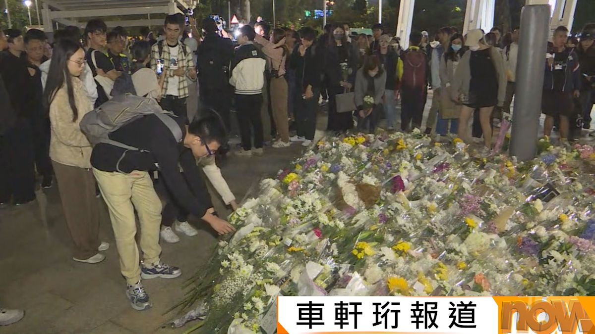
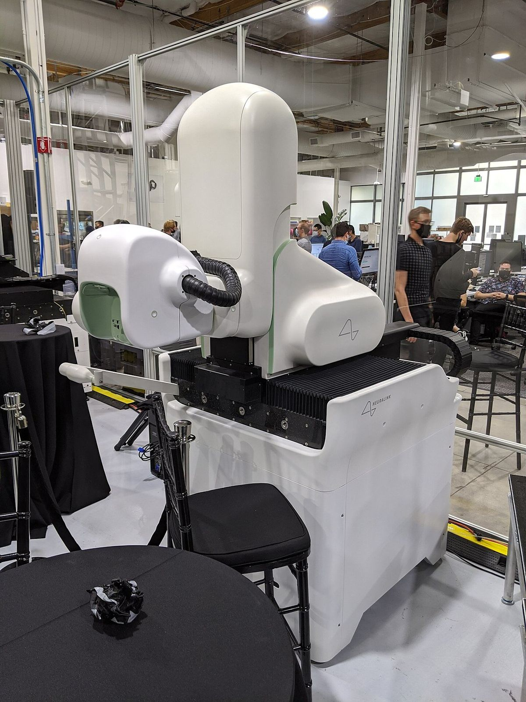

📰📱 3C
14 條流動日報
';" />
流動日報
台積電 A14 製程開放設計 較 N2P 提升 14% 效能
台積電在 2026 年歐洲 OIP 生態系統研討會宣布，A14（1.4 納米級）製造技術已準備好供客戶進行晶片設計，版本 0.9 的流程設計套件亦已就緒；A14 採用第二代納米片晶體管，效能較 N2P 提升 14%。
Yahoo! 新聞 - 港聞
';" />
Yahoo! 新聞 - 港聞
《Grand Theft Auto VI》大受歡迎 Sony 稱上市 4 天已創下多項新紀錄
Rockstar 開發多年的《GTA VI》正式推出後大受歡迎，Sony 稱遊戲上市 4 天已創下多項新紀錄。
📱
ePrice.HK 綜合新聞
ePrice.HK 綜合新聞
WhatsApp 推出「排定訊息」 最多提早 14 日設定，關機照樣傳送
WhatsApp 推出「排定訊息」功能，用家可預先寫好內容，自選日期和時間傳送，最多提早 14 日設定，關機後仍會照樣傳送；新功能將於未來數星期陸續在全球推出。

📱Yahoo! 新聞 - 港聞
';" />
Yahoo! 新聞 - 港聞
Neuralink 腦機介面獲 FDA 批准 首個關鍵試驗對象為漸凍症患者
Neuralink 宣布已取得美國 FDA 批准，啟動可植入腦機介面 LINK 的首個關鍵臨床試驗，首批對象為有限數目的漸凍症（ALS）患者，評估患者透過思想控制數碼裝置的能力；這是美國首個針對可植入腦機介面的關鍵試驗。
流動日報
';" />
流動日報
Nvidia 叫停向東南亞四國 AI 伺服器出貨
據《金融時報》報道，Nvidia 已通知 Dell、Supermicro 等製造夥伴，停止向馬來西亞、新加坡、泰國及印尼運送載有 Nvidia 晶片的伺服器，時點緊接美國上周生效的新一輪出口管制。
Yahoo! 新聞 - 港聞
';" />
Yahoo! 新聞 - 港聞
傳 OLED MacBook Air 將重新設計 最快或於 2027 年底
彭博記者 Mark Gurman 在 Power On 播客表示，採用全新外觀及 OLED 屏幕的 MacBook Air 可能於 2027 年底或 2028 年推出；在此之前，Apple 計劃於 2027 年初先為 MacBook Air 換上 M6 晶片。
流動日報
';" />
流動日報
iPhone 20 Pro 傳推陶瓷限定版 20 週年機款產能極低
中國爆料帳號「定焦數碼」稱，Apple 或為 20 週年紀念機 iPhone 20 Pro 推出加入陶瓷的限定版，相關陶瓷組件產能規劃極低；項目若通過工程驗證測試便會進入量產，但陶瓷部件用途尚未明確。
📱
CNMO科技-最新資訊
CNMO科技-最新資訊
華為 nova 16 系列累計銷量突破 350 萬台 搭載麒麟晶片
截至 11 月 15 日當周，華為 nova 16 系列累計銷量約 352.7 萬台；值得注意的是，這條增長曲線是在 10 月 9 日加價 400 元之後走出來的。
📱
CNMO科技-最新資訊
CNMO科技-最新資訊
靳玉志：華為乾崑總搭載車型 62 款 共計 26 個品牌
華為乾崑生態大會披露，乾崑總搭載車型達 62 款，共計 26 個品牌，智能化部件發貨量超過 1 億件；乾崑智駕、鴻蒙座艙及乾崑 APP 用戶量均已超過 200 萬。
📱
ePrice.HK 綜合新聞
ePrice.HK 綜合新聞
三星 Galaxy S27 Ultra 模型機曝光！改採橫向鏡頭模組、升級 5,700mAh 電池
三星 Galaxy S27 Ultra 模型機上手影片流出，改採橫向鏡頭模組，電池升級至 5,700mAh；該機亦已通過 UL Demko 認證。
📱
ePrice.HK 綜合新聞
ePrice.HK 綜合新聞
記憶體加價 傳廠商明年出貨量減近三成
記憶體報價持續高企，據報包括蘋果在內，多數手機廠商已調低 2027 年出貨目標，當中 vivo 減幅最大，接近三成；華碩亦表示記憶體成本上升，入門電腦或考慮由 16GB 降至 8GB。
 當代科技 TechNow
當代科技 TechNow
Chrome 爆 9.6 分嚴重沙盒逃逸漏洞 Google 緊急更新 158.0.8127.88 修補
Google 緊急推出 Chrome 158.0.8127.88 更新，修補一個評分高達 9.6 分的嚴重沙盒逃逸漏洞，用家應盡快更新。
 當代科技 TechNow
當代科技 TechNow
1Password 證實後端系統遭入侵 部分客戶姓名電郵外洩 密碼保管庫未被觸及
1Password 證實後端系統遭入侵，部分客戶的姓名及電郵外洩；公司強調密碼保管庫未被觸及。
當代科技 TechNow
';" />
當代科技 TechNow
12月份PlayStation Plus每月遊戲：《Tony Hawk’s Pro Skater 3+4》、《七龍珠 異戰2》、 《Amnesia: The Bunker》
12 月份 PlayStation Plus 每月遊戲公開，包括《Tony Hawk’s Pro Skater 3+4》、《七龍珠 異戰 2》及《Amnesia: The Bunker》，12 月 1 日上架。